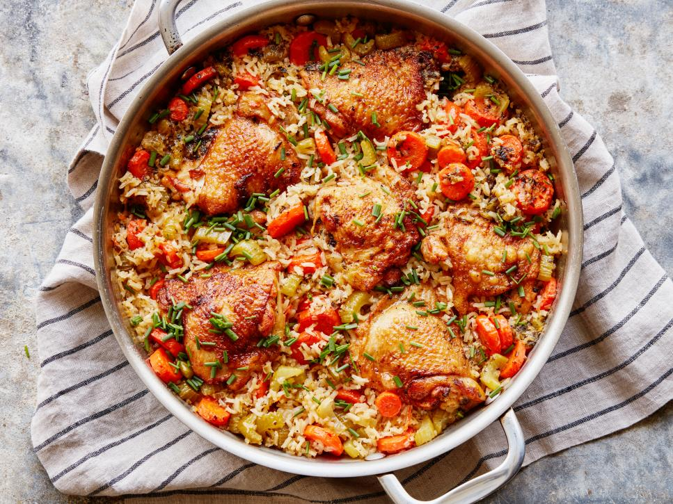

Chicken and Rice

Description:
Could classic chicken and rice be one of the most beloved comfort dinners to ever hit the plate? We think so. And to blow your mind even more, this version is made in just one skillet. Here we use bone-in, skin on chicken thighs which cook up in exactly the same time as the rice to guarantee juicy chicken. A quick broil at the end creates the perfect crispy skin and gives a little crunch to the rice and vegetables.
Ingredients:
- 2 tablespoons canola oil
- 4 to 6 bone-in, skin on chicken thighs (about 6 ounces each)
- 1/2 teaspoon paprika
- Kosher salt and freshly ground black pepper
- 4 medium carrots (about 12 ounces), sliced into 1/4-inch rounds
- 3 stalks celery (about 9 ounces), sliced 1/4-inch thick
- 2 large shallots (about 4 ounces), finely diced
- 2 cloves garlic, minced
- 1 tablespoon fresh thyme leaves, chopped
- 1 tablespoon fresh oregano leaves, chopped
- 2 teaspoons finely grated lemon zest plus 1 tablespoon lemon juice
- 1 cup long-grain rice
- 4 cups low-sodium chicken stock
- 1 tablespoon chopped fresh chives
Method:
- Preheat the broiler. Heat 1 tablespoon of the oil in a large skillet over medium-high heat. Toss the chicken with the paprika, 1 teaspoon salt and a few grinds of pepper in a large bowl. Place the chicken skin-side down in the skillet and cook undisturbed until the skin is golden but not too dark, 4 to 5 minutes. Remove the chicken to a plate using a metal spatula and add the remaining 1 tablespoon oil to the skillet.
- Add the carrots, celery and shallots to the skillet and cook, stirring occasionally, until softened but not yet turning golden, 4 to 5 minutes. Stir in the garlic, thyme, oregano, lemon zest, lemon juice, 1/2 teaspoon salt and a few grinds of pepper and cook just until you begin to smell the garlic, about 1 minute. Stir in the rice and cook undisturbed until lightly toasted, about 2 minutes. Pour in the broth, add 1/2 teaspoon salt and stir to combine, then add the chicken thighs back to the pan, skin-side up. Bring the liquid to a boil then cover, reduce the heat to a simmer and cook until the rice is tender and the chicken is cooked through, 15 to 20 minutes.
- Remove the lid from the pan and broil until the chicken skin is crispy and golden, 2 to 3 minutes. Sprinkle with the chives.